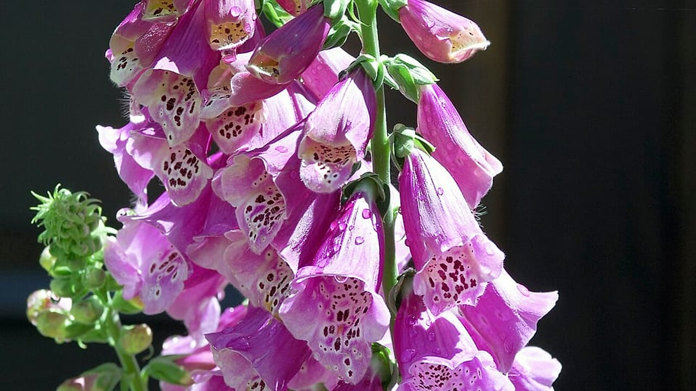

DEARBLOOM
꽃은 주고 싶은데,
검색할수록
더 어려워집니다
생일, 기념일, 감사, 위로, 사과처럼 꽃으로 마음을 전하고 싶은 순간은 많습니다.
하지만 막상 꽃을 고르려고 하면 고민이 시작됩니다.
이 꽃말이 지금 관계에
정말 어울릴까?
색이 달라지면
의미도 달라지나?
상대가 고양이를 키우는데
괜찮을까?
꽃과 함께
무슨 말을 적어야 하지?
검색 탭
6
01
꽃 추천 검색
×
02
꽃말 재검색
×
03
색상별 의미 확인
×
04
반려동물 안전 확인
×
05
카드 문구 검색
×
06
실제 꽃집·구매처 검색
×
결국 한 번의 선물을 위해
다음 과정을 반복합니다.
강조
한 번의 꽃 선물에, 최소
다섯
번의
검색과 판단이 필요합니다.
문제는 꽃 정보가 없는 것이 아닙니다.
내 마음에 이 꽃이
정말 맞는지
판단할 기준
이 없는 것입니다.
문제·배경
사진 · 디기탈리스 —
Godot13
, CC BY-SA 4.0 (Wikimedia Commons)
01/05